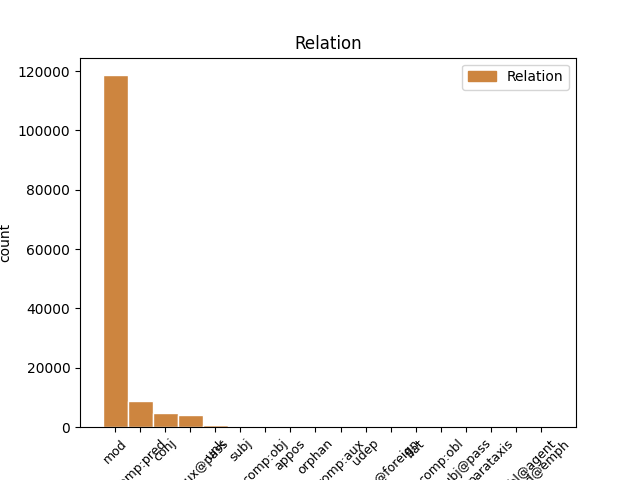
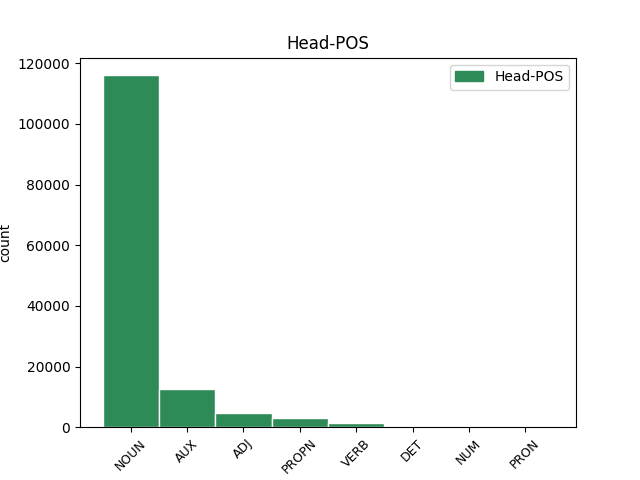
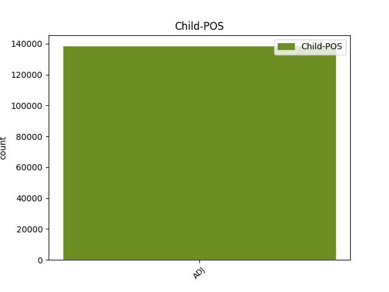

Distribution of features within this leaf



Agreement Rules sorted by frequency.
When the dependent token is None
1 na _ _ _ _ 0 _ _ _
2 kosmické _ _ _ _ 0 _ _ _
3 střelnici _ _ _ _ 0 _ _ _
4 zvané _ _ _ _ 0 _ _ _
5 sluneční sluneční ADJ AAFS1----1A---- Case=Nom|Degree=Pos|Gender=Fem|Number=Sing|Polarity=Pos 6 mod _ _
6 soustava soustava NOUN NNFS1-----A---- Case=Nom|Gender=Fem|Number=Sing|Polarity=Pos 0 _ _ _
7 to _ _ _ _ 0 _ _ _
8 bude _ _ _ _ 0 _ _ _
9 téměř _ _ _ _ 0 _ _ _
10 jistě _ _ _ _ 0 _ _ _
11 člověk _ _ _ _ 0 _ _ _
12 , _ _ _ _ 0 _ _ _
13 kdo _ _ _ _ 0 _ _ _
14 vytasí _ _ _ _ 0 _ _ _
15 jako _ _ _ _ 0 _ _ _
16 prvý _ _ _ _ 0 _ _ _
17 . _ _ _ _ 0 _ _ _
Disagree Examples:
1 Přístroje _ _ _ _ 0 _ _ _
2 , _ _ _ _ 0 _ _ _
3 vybavené _ _ _ _ 0 _ _ _
4 touto _ _ _ _ 0 _ _ _
5 funkcí _ _ _ _ 0 _ _ _
6 , _ _ _ _ 0 _ _ _
7 člení _ _ _ _ 0 _ _ _
8 předávanou _ _ _ _ 0 _ _ _
9 zprávu _ _ _ _ 0 _ _ _
10 na _ _ _ _ 0 _ _ _
11 bloky _ _ _ _ 0 _ _ _
12 , _ _ _ _ 0 _ _ _
13 obvykle _ _ _ _ 0 _ _ _
14 jednotlivé _ _ _ _ 0 _ _ _
15 řádky _ _ _ _ 0 _ _ _
16 , _ _ _ _ 0 _ _ _
17 a _ _ _ _ 0 _ _ _
18 v _ _ _ _ 0 _ _ _
19 případě _ _ _ _ 0 _ _ _
20 rušení _ _ _ _ 0 _ _ _
21 na _ _ _ _ 0 _ _ _
22 lince _ _ _ _ 0 _ _ _
23 opakují _ _ _ _ 0 _ _ _
24 přenos _ _ _ _ 0 _ _ _
25 porušených _ _ _ _ 0 _ _ _
26 bloků _ _ _ _ 0 _ _ _
27 tak _ _ _ _ 0 _ _ _
28 dlouho _ _ _ _ 0 _ _ _
29 , _ _ _ _ 0 _ _ _
30 až _ _ _ _ 0 _ _ _
31 jsou být AUX VB-P---3P-AA--- Mood=Ind|Number=Plur|Person=3|Polarity=Pos|Tense=Pres|VerbForm=Fin|Voice=Act 0 _ _ _
32 všechna _ _ _ _ 0 _ _ _
33 data _ _ _ _ 0 _ _ _
34 předána předaný ADJ VsQW---XX-AP--- Aspect=Perf|Gender=Fem,Neut|Number=Plur,Sing|Polarity=Pos|Variant=Short|VerbForm=Part|Voice=Pass 31 comp:pred _ LDeriv=předat|LGloss=(někomu_něco)|LId=předaný-3
35 správně _ _ _ _ 0 _ _ _
36 . _ _ _ _ 0 _ _ _
1 Převážná _ _ _ _ 0 _ _ _
2 část _ _ _ _ 0 _ _ _
3 přístrojů _ _ _ _ 0 _ _ _
4 je být AUX VB-S---3P-AA--- Mood=Ind|Number=Sing|Person=3|Polarity=Pos|Tense=Pres|VerbForm=Fin|Voice=Act 0 _ _ _
5 seřízena seřízený ADJ VsQW---XX-AP--- Gender=Fem,Neut|Number=Plur,Sing|Polarity=Pos|Variant=Short|VerbForm=Part|Voice=Pass 4 comp:pred _ LDeriv=seřídit
6 na _ _ _ _ 0 _ _ _
7 role _ _ _ _ 0 _ _ _
8 o _ _ _ _ 0 _ _ _
9 délce _ _ _ _ 0 _ _ _
10 30 _ _ _ _ 0 _ _ _
11 m _ _ _ _ 0 _ _ _
12 . _ _ _ _ 0 _ _ _
1 Tyto _ _ _ _ 0 _ _ _
2 přístroje _ _ _ _ 0 _ _ _
3 by _ _ _ _ 0 _ _ _
4 se _ _ _ _ 0 _ _ _
5 měly _ _ _ _ 0 _ _ _
6 objevit _ _ _ _ 0 _ _ _
7 i _ _ _ _ 0 _ _ _
8 na _ _ _ _ 0 _ _ _
9 našem _ _ _ _ 0 _ _ _
10 trhu _ _ _ _ 0 _ _ _
11 během _ _ _ _ 0 _ _ _
12 krátké _ _ _ _ 0 _ _ _
13 doby _ _ _ _ 0 _ _ _
14 , _ _ _ _ 0 _ _ _
15 ale _ _ _ _ 0 _ _ _
16 zatím _ _ _ _ 0 _ _ _
17 v _ _ _ _ 0 _ _ _
18 prodeji _ _ _ _ 0 _ _ _
19 nejsou _ _ _ _ 0 _ _ _
20 a _ _ _ _ 0 _ _ _
21 není být AUX VB-S---3P-NA--- Mood=Ind|Number=Sing|Person=3|Polarity=Neg|Tense=Pres|VerbForm=Fin|Voice=Act 0 _ _ _
22 ani _ _ _ _ 0 _ _ _
23 stanovena stanovený ADJ VsQW---XX-AP--- Aspect=Perf|Gender=Fem,Neut|Number=Plur,Sing|Polarity=Pos|Variant=Short|VerbForm=Part|Voice=Pass 21 comp:pred _ LDeriv=stanovit|LGloss=(určit)
24 cena _ _ _ _ 0 _ _ _
25 . _ _ _ _ 0 _ _ _
1 Některé _ _ _ _ 0 _ _ _
2 dokonce _ _ _ _ 0 _ _ _
3 lidskou _ _ _ _ 0 _ _ _
4 řečí _ _ _ _ 0 _ _ _
5 požádají požádat VERB VB-P---3P-AA--- Aspect=Perf|Mood=Ind|Number=Plur|Person=3|Polarity=Pos|Tense=Pres|VerbForm=Fin|Voice=Act 0 _ _ _
6 volajícího volající ADJ AGMS4-----A---- Animacy=Anim|Aspect=Imp|Case=Acc|Gender=Masc|Number=Sing|Polarity=Pos|Tense=Pres|VerbForm=Part|Voice=Act 5 comp:obj _ LDeriv=volat
7 o _ _ _ _ 0 _ _ _
8 posečkání _ _ _ _ 0 _ _ _
9 , _ _ _ _ 0 _ _ _
10 než _ _ _ _ 0 _ _ _
11 provedou _ _ _ _ 0 _ _ _
12 příslušnou _ _ _ _ 0 _ _ _
13 identifikaci _ _ _ _ 0 _ _ _
14 . _ _ _ _ 0 _ _ _
1 U _ _ _ _ 0 _ _ _
2 soudů soud NOUN NNIP2-----A---- Animacy=Inan|Case=Gen|Gender=Masc|Number=Plur|Polarity=Pos 0 _ _ _
3 zatím _ _ _ _ 0 _ _ _
4 podáno podaný ADJ VsNS---XX-AP--- Aspect=Perf|Gender=Neut|Number=Sing|Polarity=Pos|Variant=Short|VerbForm=Part|Voice=Pass 2 unk _ LDeriv=podat|LGloss=(něco_[někomu]_[někam])
5 kolem _ _ _ _ 0 _ _ _
6 jednoho _ _ _ _ 0 _ _ _
7 tisíce _ _ _ _ 0 _ _ _
8 návrhů _ _ _ _ 0 _ _ _
9 na _ _ _ _ 0 _ _ _
10 konkurz _ _ _ _ 0 _ _ _